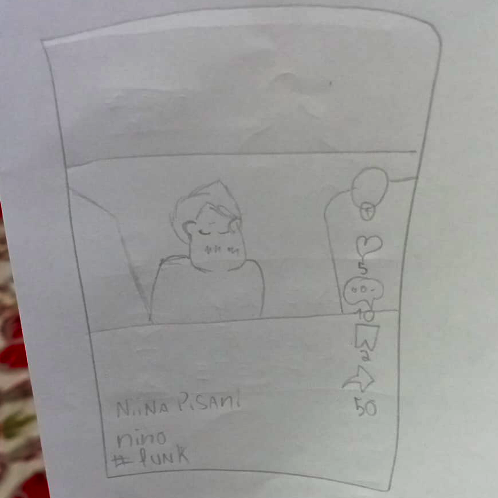
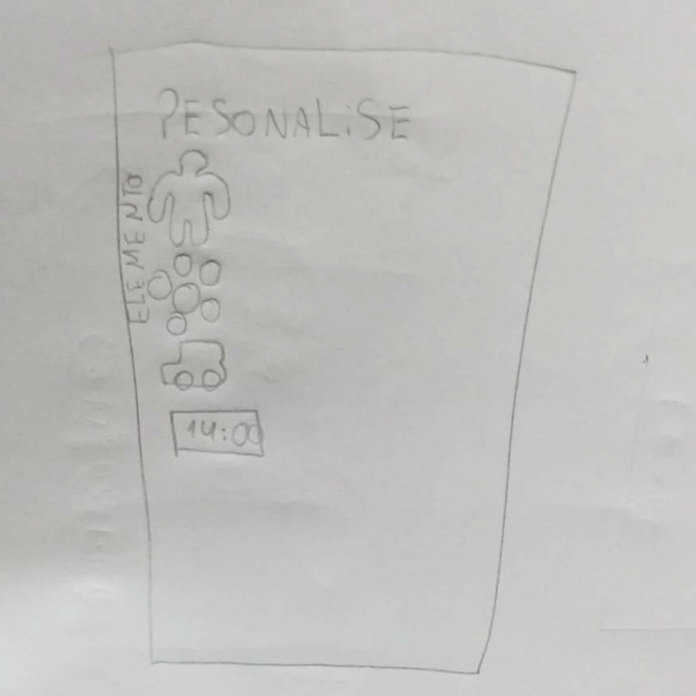
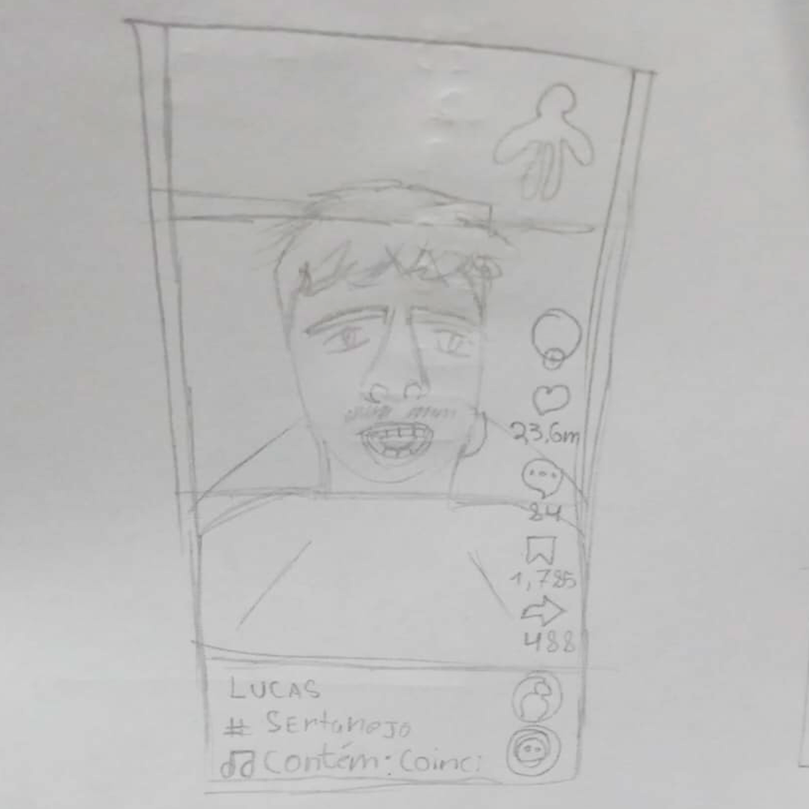
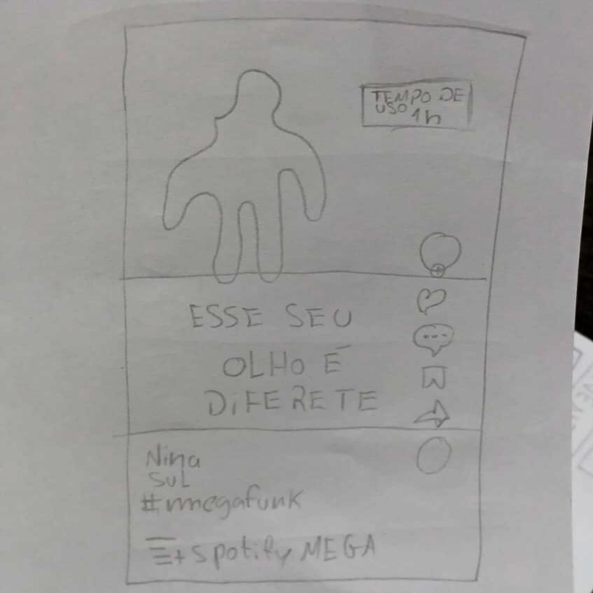
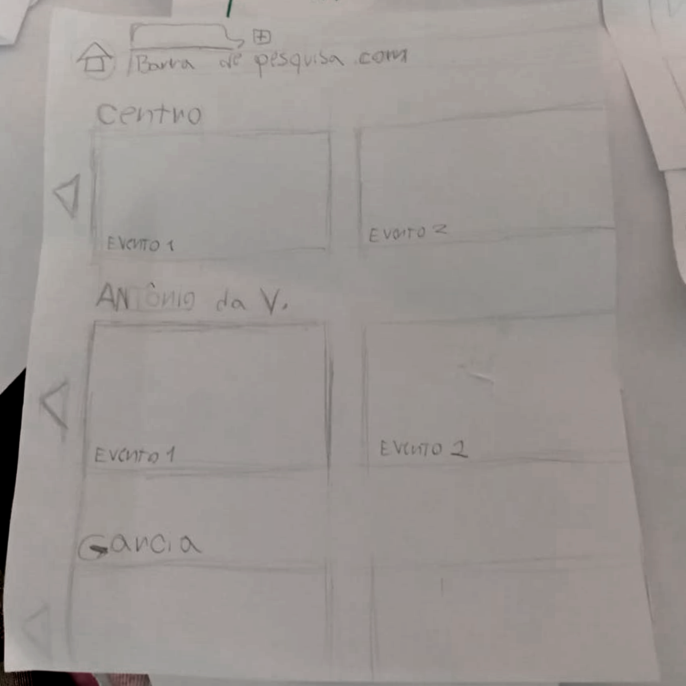

Diretriz 1
Personalização de Nível
Desenvolver uma solução mais prática e eficiente para facilitar a experiência dos usuários nas redes sociais.
Desenvolver uma solução (estética, formato e execução ainda a definir) para reduzir o tempo de tela no Instagram e no TikTok entre adolescentes e jovens adultos.
O Brasil lidera o ranking global de uso de redes sociais (média de 3h32min/dia). Para os jovens, essas plataformas são essenciais para identidade e socialização, tornando a desconexão total inviável.
O modelo de negócios baseado em anúncios, aliado a formatos como vídeos curtos e timeline infinita, prende o usuário intencionalmente.
O uso excessivo gera ansiedade, depressão, distúrbios do sono, agitação, queda de concentração em tarefas offline e sofrimento causado pela comparação com padrões irreais impulsionados pelos algoritmos.
Adolescentes e jovens adultos afetados negativamente pelo uso compulsivo do Instagram e TikTok (com sintomas de ansiedade, falta de foco e dependência do celular no dia a dia).
Desenvolver uma solução mais prática e eficiente para facilitar a experiência dos usuários nas redes sociais.
Criar uma solução que não estimule o vício ou a permanência excessiva nas redes sociais.
Oferecer maior liberdade criativa e opções de personalização dos perfis.
Desenvolver uma solução viável que amenize o problema, considerando que as redes sociais continuarão fazendo parte do cotidiano.
Jovens entre 17 e 27 anos, com predominância de 18 e 19 anos (56% das respostas).
Instagram é a principal rede para 44% dos participantes, seguido pelo TikTok com 28% e WhatsApp com 20%.
64% permanecem mais de 2 horas por dia em uma rede social.
72% preferem ficar em casa nos dias livres, tendo como principais hobbies jogar jogos virtuais (64%), assistir filmes/séries (60%), desenhar (32%) e praticar esportes (28%).
32% encontram amigos uma vez por semana, 24% com muita frequência, 24% raramente e 20% às vezes. 68% buscam eventos presenciais pelo Instagram, mas 64% sentem dificuldade em encontrar eventos do seu gosto.
Em escala de 1 a 5 sobre o quanto as redes sociais sufocam o dia a dia, 48% marcaram níveis altos (4 ou 5) e 32% nível intermediário (3). Nas respostas abertas (22 respostas), os jovens apontam que as redes são úteis para comunicação e entretenimento, mas reconhecem o vício por dopamina rápida, padrões irreais, prejuízo à saúde mental e a impossibilidade de abandoná-las totalmente.
A maioria dos jovens enxerga as redes sociais como uma ferramenta ambivalente: úteis para comunicação, informação, entretenimento e divulgação de serviços, mas prejudiciais quando usadas sem moderação. Muitos destacam que seu uso se tornou uma necessidade normalizada e impossível de eliminar totalmente do cotidiano.
Reconhecidas como boas para informação, comunicação rápida e divulgação profissional, desde que usadas com equilíbrio e limites (ex.: sugestão de até 30 min/dia).
Relatos apontam que o scroll infinito oferece prazer rápido sem esforço ("dopamina barata"), gerando vício, sedentarismo e prejuízos à saúde mental, ao foco e ao desenvolvimento pessoal.
Percepção de que as redes estão impedindo interações e relações interpessoais mais profundas no dia a dia, prendendo o usuário em um único lugar.
Críticas aos padrões de beleza inalcançáveis, falsa sensação de felicidade constante, manipulação algorítmica/FOMO e a percepção de que, mesmo cientes dos problemas, os jovens não conseguem abandonar as plataformas por estarem enraizadas na sociedade (com pedido por regulamentação).
"É uma forma rápida e extremamente viciante de receber dopamina. E por ser um prazer tão fácil e confortável ele é viciante, e tempo de tela em excesso nunca é um bom sinal."
— Participante Q10
"Acho q são um vício e uma necessidade que foram normalizados na sociedade atual."
— Participante Q10
"Com uso moderado e responsabilidade acredito que seja algo bom, porém atualmente as redes sociais acabam limitando integrações mais profundas com outras pessoas no dia a dia."
— Participante Q10
Média ponderada exata combinando os 8 registros individuais (4h19m, 5h21m, 4h53m, 5h40m, 2h33m, 3h36m, 5h31m e 3h08m).
Projeção baseada na média diária de 4h 23min × 7 dias, alinhada aos registros de tempo acumulado e dados da pesquisa.
Liderado por TikTok, seguido de WhatsApp e Instagram.
14h26min/sem em Redes Sociais (16h05min total). Possui limites personalizados configurados para TikTok e Instagram.
Média diária próxima a 5h; indica 9h05min a mais enquanto acordado no equilíbrio semanal.
5h31min em Redes Sociais (picos de 60 min/h). Apenas 1min em Entretenimento e 11s em Leitura.
1h38min em Redes Sociais, 10min em Compras/Comida e 8min em Produtividade/Finanças.
Instagram (maior fatia), TikTok e WhatsApp. 36 desbloqueios, 80 notificações e nenhum timer configurado.
242 notificações. 1h29min no WhatsApp, 1h20min no YouTube e 1h11min no Instagram.
9h24min totais no período, sendo 5h12min em Redes Sociais e 2h40min no WhatsApp.
Frase"Elemento que cresce na tela conforme seu tempo de uso das redes sociais aumenta"
Um elemento que atrapalha o uso das redes sociais para diminuir o tempo de tela do usuário
Frase"Lugar que ajuda o usuário a encontrar evento fora das redes"
Um app/site que ajuda a organizar eventos para diminuir tempo de tela

Tela inicial do feed de vídeos curtos (perfil Nina Pisani, #funk, ícones laterais de interação) antes da ativação/crescimento do elemento bloqueador.

Tela de configuração "Personalize" onde o usuário escolhe o formato do elemento (boneco/personagem, bolhas/círculos, carrinho/objeto ou temporizador 14:00).

Feed em uso (perfil Lucas, #sertanejo) com o elemento escolhido (boneco) surgindo pequeno no canto superior direito da tela.

Evolução do uso (perfil Nina Sul, #megafunk) com indicador "Tempo de uso: 1h" e o elemento crescendo e ocupando a parte superior da tela para dificultar a visualização e rolagem.
Estágio avançado de tempo de tela ("Tempo de uso: 1h" / sobrecarga) com o elemento expandido sobre a interface de vídeo curto ("Esse seu olho é diferente") restringindo a interação.

Sketch de site/portal com barra de pesquisa superior e eventos organizados por bairros de Blumenau ("Centro" — Evento 1, Evento 2; "Antônio da Veiga" — Evento 1, Evento 2; "Garcia") com navegação lateral por setas.